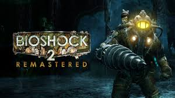
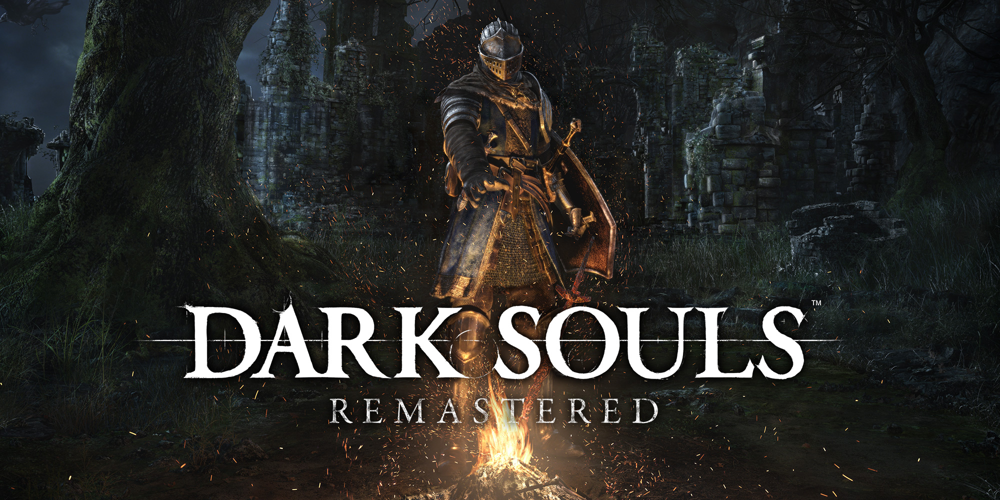
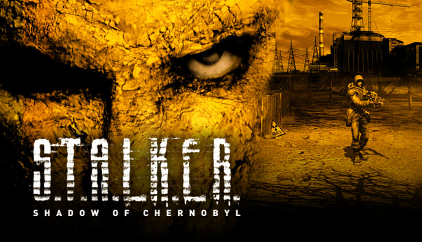

Top mejores juegos que debes probar by Shyppeta


Saga de Bioshock
Una de las mejores trilogias de los juegos, con un exelente cierre de historia, una trama que te mantiene entretenido, tenso, y espectante de lo que pueda suceder. Un fps, con uns historia, guiún, música y dirección mejor llevadas.



Saga de Dark Souls
Uno de esos juegos en los que no vas a entender nada, vas a morir, vas a morir, vas a morir, ya dije que vas a morir? Pero de alguna forma cada muerte se siente como algo que vos hiciste mal, algo que tenes que superar y te alianta a volver a intentarlo. Su historia no la vas a entender la primera vez que lo juegues, tampoco esta dicha, solamente la tenes que especular y analizar un monton.

Sagas de Final Fantasy
Con una de las mejores banda sonoras de la historia de los videojuegos y con tramas que te desde el minuto uno te atrapan. Los final fantasy fueron parte de mi infancia y son juegos que se los recomendaria a todo el mundo aquel que le guste disfrutar de farmear junto a historias inolvidables.



Saga de S.T.A.L.K.E.R
Una de las sagas mejores ambientadas, dentro del mundo apocaliptico de Chernobyl y Pripyat. Con sustos y una jugabilidad magnifica.


Saga Tales of...
Los Tales of al igual que los final fantasy son juegos que si te gustan las grandes historias pero más ambientadas al mundo del anime, tenes que probarlos. Farmeo, experiencia, buena trama y largos pero largos viajes garantizados.

Saga Half Life. Gabe porfa el 3
El Half Life, fue un juego que me marco, recuerdo pasarmelo en tan solo 2 días desde el 1 al final del 2. Un fps con una historia que te deja con la boca abierta y muchas pero muchas ganas de más. El diseño de personajes para la epoca en la que fue publicado es sublime.Menciones honorificas

Kenshi
Un juego de más de dificil en el que no te explican como jugarlo y uno decide su historia en un mundo para nada lineal.
Prey
Este juego no esta en el top, simplemente porque lo tomo como un predecesor de Bioshock. Tomo cada aspecto de Bioshock y lo volvio propio, modificandolo. Es una obra de arte por supuesto.Total War Warhammer
Uno de los juegos de estrategia mejores llevados phasta el momento, en un mundo de fantasia como lo es Warhammer, simplemente era imposible que falle.Age of Empires
El clasico de los clasicos de los RTS, una obra maestra que para los que lo jugamos cuando teniamos 7 años simplemente disfrutabamos de usar trucos y masacrar a todos.